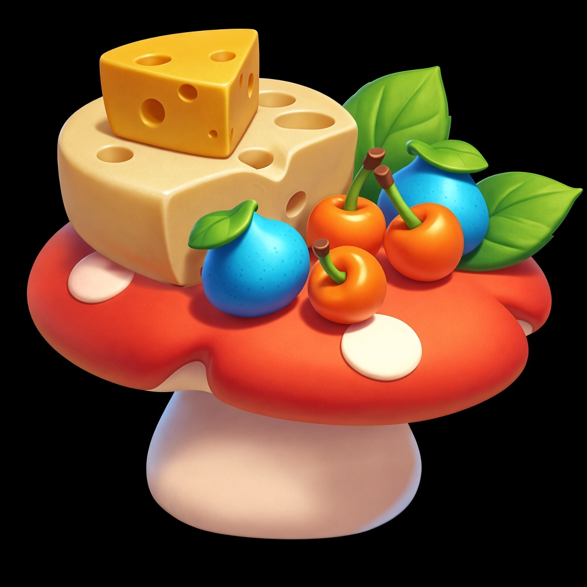
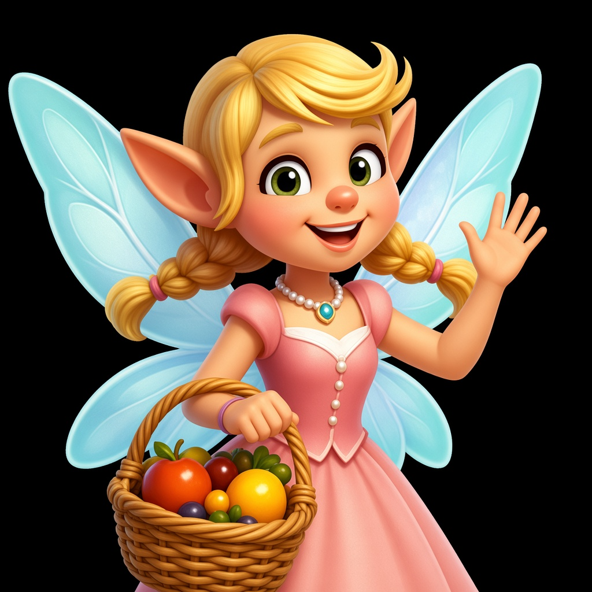
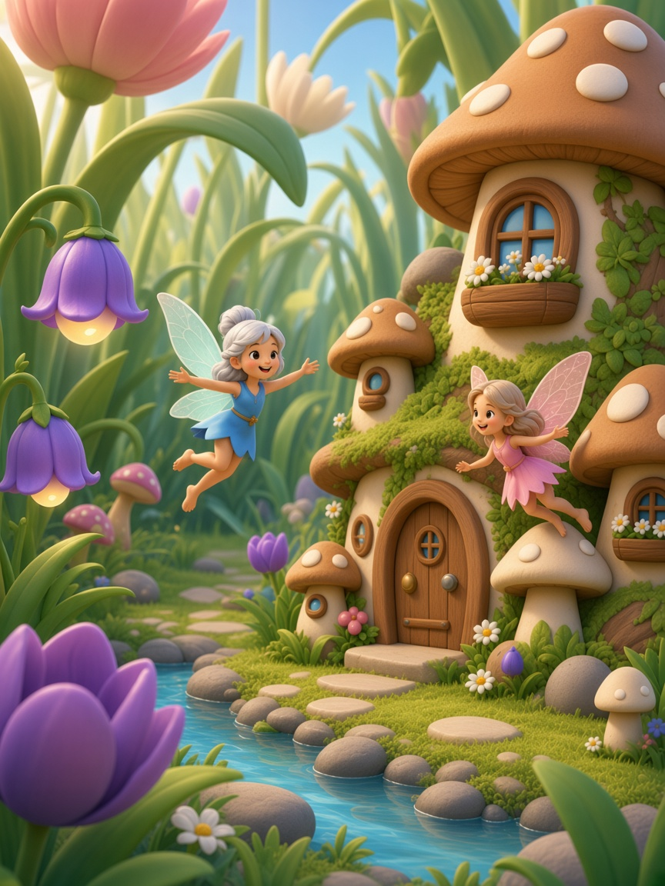
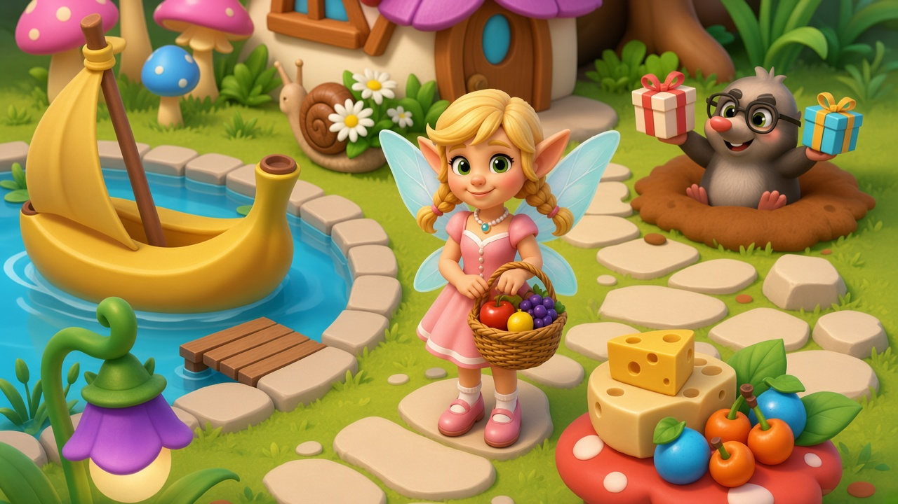
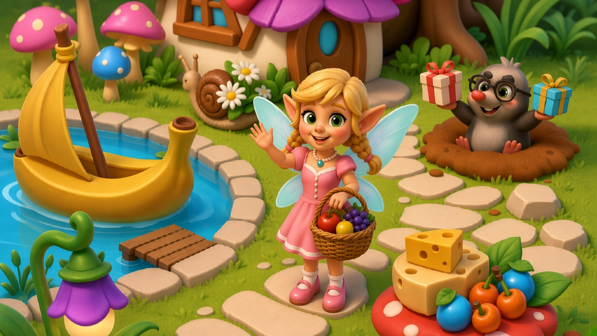
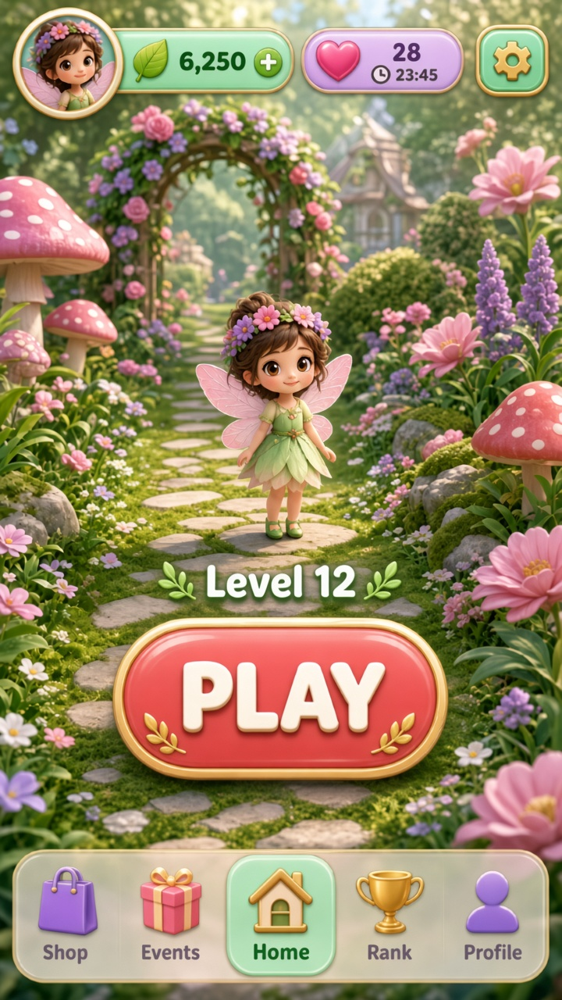
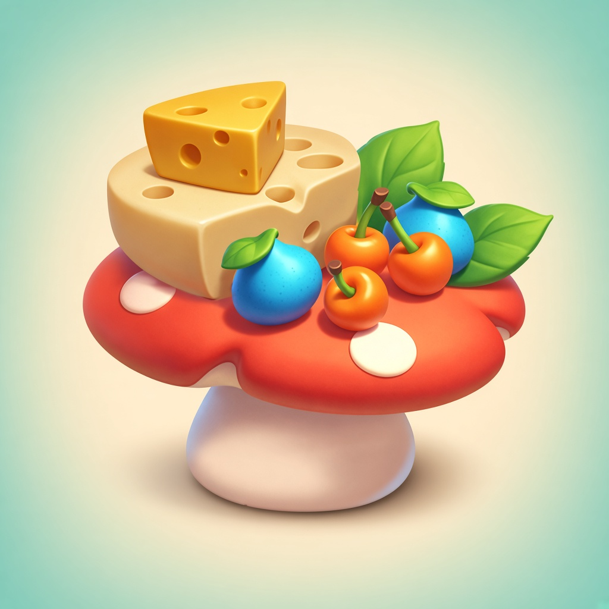
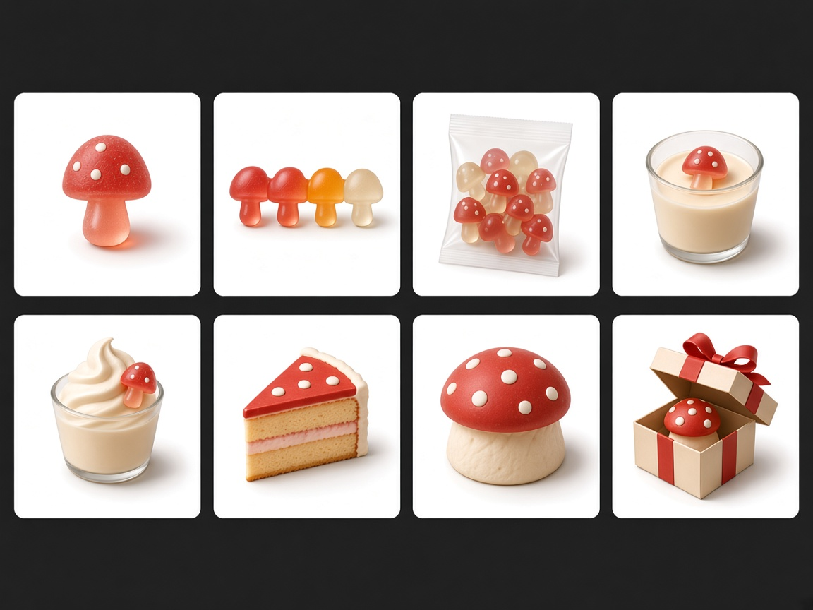

技能展陈 · 2026-11-09 · 妖精花园休闲
STOP≥9.50 · 最多 4 轮 · 到线即停 · 满轮取最高分。Merge v2 已按完整 SKU 形变重出（禁同底座堆料）。
镜头包仍为 awaiting_pick（点选前禁止生图）。未达 9.5 的支线均已满 4 轮后以最高分入展。
闭环终稿（胜出格）
克隆 · 冬日农场draw.clone · 4 轮 · 8.99 · 胜出第4轮

普通图 · 蘑菇道具draw.ordinary · 4 轮 · 8.60 · 胜出第2轮

变体draw.variant · 4 轮 · 8.87 · 胜出第3轮

原画 Key Artdraw.key · 4 轮 · 8.80 · 胜出第4轮

多图 · 关draw.multi · 4 轮 · 8.69 · 胜出第3轮

多图 · 开draw.multi · 4 轮 · 8.63 · 胜出第3轮

UI 概念ui.kit · 4 轮 · 9.07 · 胜出第2轮

图标A Light母版icon.a · 4 轮 · 9.06 · 胜出第1轮

合成梯整表 · 完整SKUmerge.ladder v2 · 4 轮 · 8.81 · 胜出第3轮 · shop_ladder SKU形变